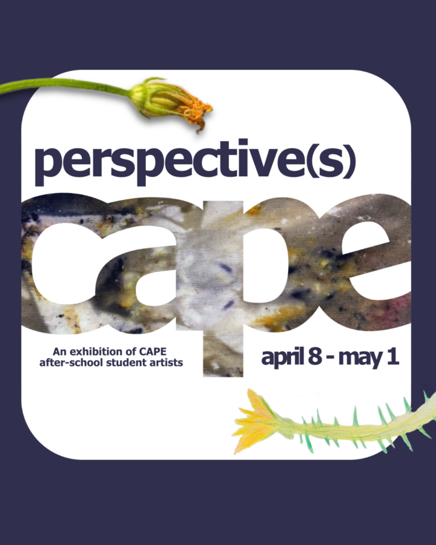

Perspective(s) Closing Reception
A celebration of our student artists and community members. Enjoy art, light bites, and a special live performance by the CAPE band Dandelites from North-Grand High School.
This event coincides with Perspective(s), CAPE’s annual exhibition featuring artwork by more than 400 after-school student artists from 10 schools across Chicago and West Chicago.
Learn more and RSVP here: https://secure.qgiv.com/for/dtxtsa/event/perpesctivesclosing/